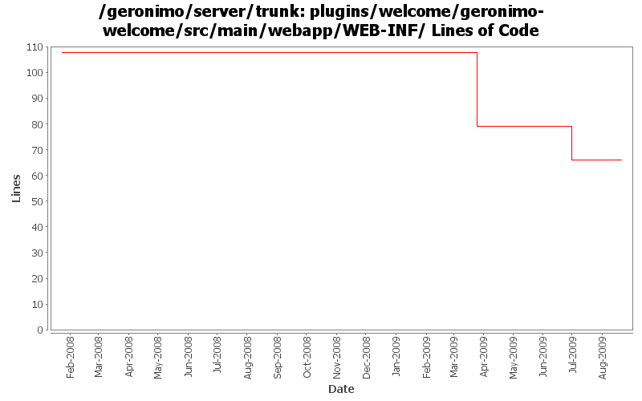

[root]/plugins/welcome/geronimo-welcome/src/main/webapp/WEB-INF

| Author | Changes | Lines of Code | Lines per Change |
|---|---|---|---|
| Totals | 9 (100.0%) | 50 (100.0%) | 5.5 |
| jbohn | 5 (55.6%) | 48 (96.0%) | 9.6 |
| kevan | 1 (11.1%) | 1 (2.0%) | 1.0 |
| dwoods | 1 (11.1%) | 1 (2.0%) | 1.0 |
| gawor | 2 (22.2%) | 0 (0.0%) | 0.0 |
update other XML files with embedded versions from 2.2-SNAPSHOT to 3.0-SNAPSHOT
1 lines of code changed in 1 file:
merge 789881 from branches/2.1 - GERONIMO-4722 - remove XSSXSRFFilter from welcome application
0 lines of code changed in 1 file:
GERONIMO-4597 Validate Web Admin Console input - fixes for CVE-2008-5518, CVE-2009-0038, and CVE-2009-0039
12 lines of code changed in 1 file:
merge 676738 from branches/2.1 - GERONIMO-4208 Eliminate individual sample references from Geronimo Welcome Page
36 lines of code changed in 1 file:
correct the modulesIds for samples in the welcome app
0 lines of code changed in 2 files:
upgrade trunk to 2.2-SNAPSHOT
1 lines of code changed in 1 file:
org.apache.geronimo.applications -> org.apache.geronimo.plugins
0 lines of code changed in 2 files: